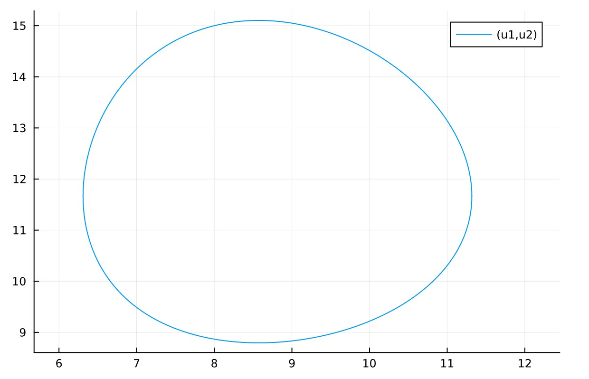
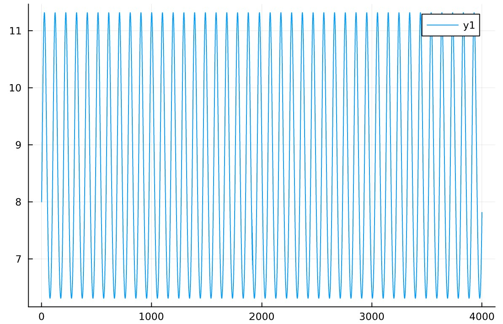
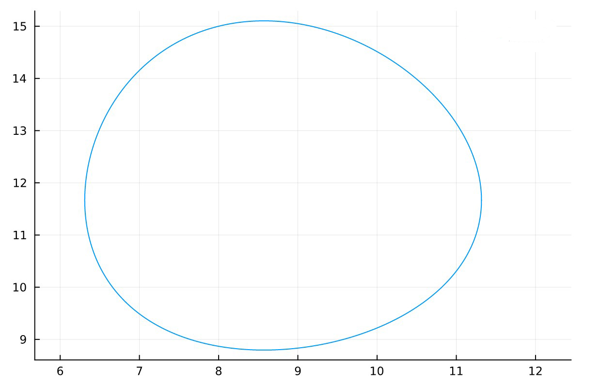
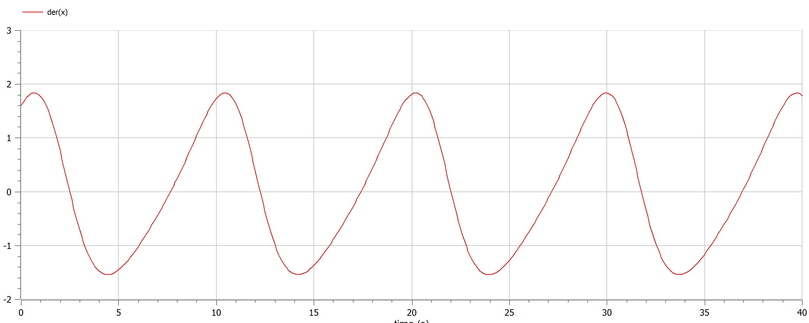
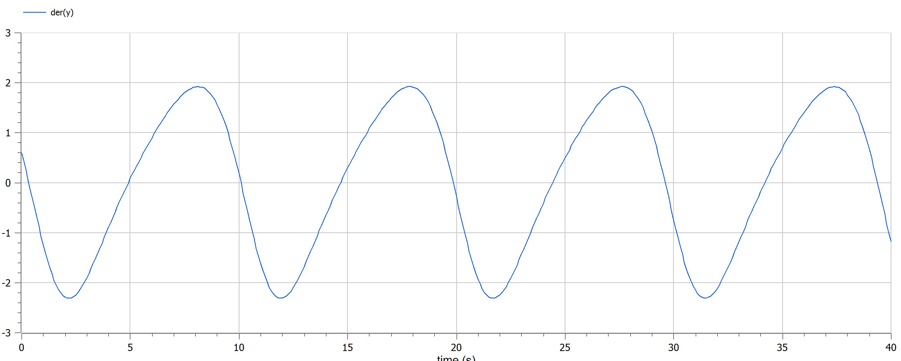

Информация
Докладчик
предмет исследования
хищник жертва
- Численность популяции жертв x и хищников y зависят только от времени
(модель не учитывает пространственное распределение популяции на
занимаемой территории)
- В отсутствии взаимодействия численность видов изменяется по модели
Мальтуса, при этом число жертв увеличивается, а число хищников
падает
- Естественная смертность жертвы и естественная рождаемость хищника
считаются несущественными
- Эффект насыщения численности обеих популяций не учитывается
- Скорость роста численности жертв уменьшается пропорционально
численности хищников $$\frac{dx}{dt}=ax(t)-bx(t)y(t)$$ $$\frac{dy}{dt}=-cy(t)+dx(t)y(t)$$ В этой
модели x – число жертв, y - число хищников. Коэффициент a описывает
скорость естественного прироста числа жертв в отсутствие хищников, с
естественное вымирание хищников, лишенных пищи в виде жертв. Вероятность
взаимодействия жертвы и хищника считается пропорциональной как
количеству жертв, так и числу самих хищников (xy). Каждый акт
взаимодействия уменьшает популяцию жертв, но способствует увеличению
популяции хищников (члены -bxy и dxy в правой части уравнения).
Цели и задачи
Для модели «хищник-жертва»:
$$
\frac{dx}{dt} = -0.7x(t)+0.06x(t)y(t)
$$ $$
\frac{dy}{dt} = 0.6y(t)-0.07x(t)y(t)
$$ Постройте график зависимости численности хищников от
численности жертв, а также графики изменения численности хищников и
численности жертв при следующих начальных условиях: x0 = 8, y0 = 15
Найдите стационарное состояние системы.
полученные графики
{pic#001::juliafirstcase} {pic#002::juliasecondcase}
{pic#002::modelicazerocase} {pic#002::modelicafirstcase} {pic#002::modelicasecondcase}
Материалы и методы
- openmodelica connection editor
- jupyter notebook
Результаты
- Построено график зависимости численности хищников от численности
жертв на julia и openmodelica
- узнал про mоделе хищник жертва
Итог работы
- Построен mоделе хищник жертва
- получено report.md из pandoc
- получено report.pdf из pandoc
- получено report.docx из pandoc
- получено presentation.md из pandoc
- получено presentation.pdf из pandoc
- получено presentation.html из pandoc
- работа выложена на хостинге github
- создан CHANGELOG.md